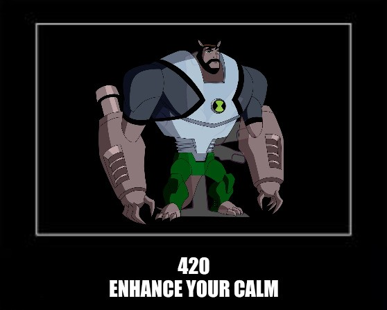

420 Enhance your calm
Descrição
Não oficial: Esse código de status HTTP não é especificado por nenhum RFC.
O código de status HTTP
420 Method Failure e
420 Enhance your calm é um código de
status HTTP não oficial que é retornado pelo servidor para indicar um
erro do cliente. Quando enviado pelo Spring Framework, ele indica indica
que um método falhou, enquanto que, quando enviado pelo Twitter, indica
que o cliente está sendo limitado por fazer muitas solicitações.
Spring Framework
Quando o código de status
HTTP 420 Method Failureé enviado pelo
pelo Spring Framework, ele indica que houve falha em um método. No
entanto, esse código de status foi depreciado e não é mais usado pelo
Spring.
Na versão 1.0 das APIs Twitter Search e Trends, o código de status HTTP
420 Enhance your calm era usado para
indicar que o cliente estava sendo limitado por fazer muitas
solicitações. limitado por fazer muitas solicitações. A intenção era
facilitar o tráfego restringindo os clientes a um determinado número de
solicitações em um tempo específico. Com o lançamento do Standard v1.1
da API do Twitter, esse status foi depreciado e, em vez disso, eles usam
a mensagem oficial
429 Too Many Requests.